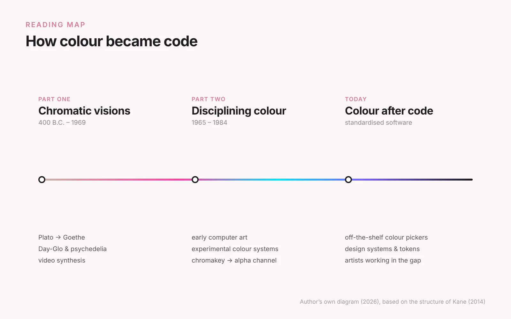
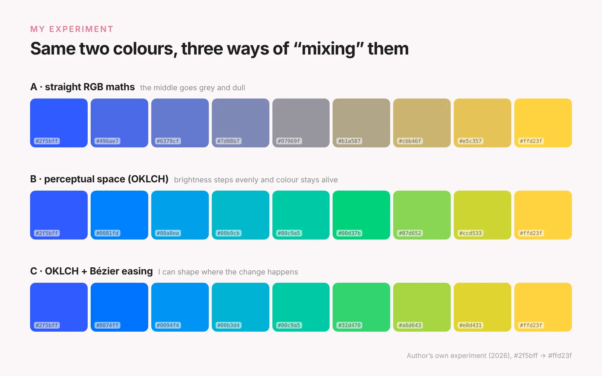

This week’s reading, Chromatic Algorithms: Synthetic Color, Computer Art, and Aesthetics after Code by Carolyn L. Kane, has made me rethink something I use every single day but almost never question, which is colour on a screen. I type a hex code, pick a swatch from a colour picker, and the colour simply “appears”. Kane reminds me that this simplicity has a long and surprisingly wild history behind it, and that every colour I see on a screen is, in the end, a piece of code.

From optics to algorithms
The book follows colour from philosophy and optics to algorithms. It starts with classical and modern ideas of colour from Plato through Goethe, moves to industrial colour, synthetic dyes and Day-Glo psychedelics, and then to video synthesis, early computer art, experimental colour systems, and finally the step “from chromakey to the alpha channel” (Kane, 2014). Kane uses a media archaeology approach, which means she does not just tell a story of progress, but digs into forgotten machines, experiments and artists to understand how our current way of seeing was built (New Books Network, 2014).
What surprised me most is how emotional and even utopian early computer colour was. Kane shows that the first computer-generated colours, made with huge post-war number-crunching machines, were so fantastic that artists and computer scientists saw them as psychedelic, even revolutionary, signs of a better future for humans and machines (Kane, 2014). Today, we would never describe a default blue in a colour picker as “revolutionary”. This made me realise that our relationship with digital colour has become very calm, maybe too calm.
Standardisation and what we lose
The part I keep thinking about is Kane’s argument that the explosive growth of personal computing, and its need for off-the-shelf software, led to standardisation and gradually closed the experimental field where computer artists used to thrive (Kane, 2014). For example, when colour became a menu option in commercial software, it became easier for everyone to use, but also more invisible. We choose from what the software gives us, instead of asking how the colour is produced.
Honestly, this made me look at my own work in a slightly uncomfortable way. During my internship, I built a Bézier-curve colour tool to smooth uneven palettes, and the tool and the refined palette were adopted into the company’s design system. At the time, I only saw it as solving a practical problem, making colours more consistent. But after this reading, I realise I was also taking part in exactly the process Kane describes, turning colour into rules, tokens and standards. Consistency is important in product design, but it also means some “strange” or unexpected colours will never appear.

A small experiment
To understand Kane’s idea that the colour on screen and the code underneath are two different worlds, I tried a simple test. I mixed the same blue and yellow in three different ways. When I used straight RGB maths, the middle of the gradient turned into a dull grey, even though both end colours are bright. When I mixed them in a perceptual colour space (OKLCH), the colours stayed alive and moved through cyan and green instead. And when I added a Bézier curve, I could decide where the change happens. The two end colours never changed, only the code in between. This is exactly what I find exciting about Kane’s “gap”, the colour we see is not fixed, it depends on the model, the maths and the choices hidden behind it.
What this means for my practice
Kane says that the gap between bright, bold colour on screen and the increasingly abstract code underneath still attracts artists and designers from many fields (Kane, 2014). For my experimental practice this term, I want to work inside that gap instead of hiding it. For example, instead of always choosing “safe” colours from a design system, I want to let colour be generated by data, sensors or even mistakes, and see what kind of colours appear when I don’t fully control them.
In general, this week’s reading has made me understand that digital colour is not neutral. Every colour on a screen carries a history of technology, commerce and standardisation. As someone who both designs systems and wants to experiment, I think my job is not to choose one side, but to know when to follow the rules and when to break them on purpose.
Bibliography
- Kane, C. L. (2014) Chromatic Algorithms: Synthetic Color, Computer Art, and Aesthetics after Code. Chicago: University of Chicago Press.
- New Books Network (2014) ‘Carolyn L. Kane, Chromatic Algorithms: Synthetic Color, Computer Art, and Aesthetics after Code’. Available at: https://newbooksnetwork.com/carolyn-l-kane-chromatic-algorithms-synthetic-color-computer-art-and-aesthetics-after-code-u-of-chicago-press-2014-3 (Accessed: 27 November 2026).
- Cycling ’74 (2016) ‘Book Review: Chromatic Algorithms’. Available at: https://cycling74.com/2016/05/10/book-review-chromatic-algorithms (Accessed: 27 November 2026).
- Ottosson, B. (2020) ‘A perceptual color space for image processing’. Available at: https://bottosson.github.io/posts/oklab/ (Accessed: 27 November 2026).